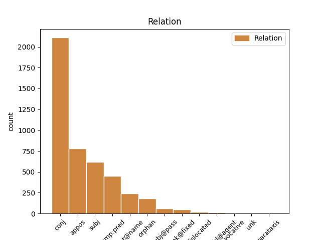
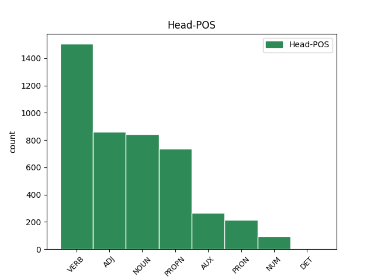
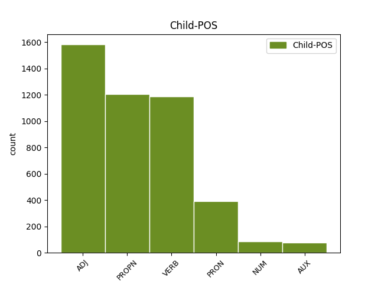

Distribution of features within this leaf



Agreement Rules sorted by frequency.
- When the dependent token is the conjunct(conj) of the head token, and the dependent token is VERB.
1 ἔξω _ _ _ _ 0 _ _ _
2 οἱ _ _ _ _ 0 _ _ _
3 κύνες _ _ _ _ 0 _ _ _
4 καὶ _ _ _ _ 0 _ _ _
5 οἱ _ _ _ _ 0 _ _ _
6 φάρμακοι _ _ _ _ 0 _ _ _
7 καὶ _ _ _ _ 0 _ _ _
8 οἱ _ _ _ _ 0 _ _ _
9 πόρνοι _ _ _ _ 0 _ _ _
10 καὶ _ _ _ _ 0 _ _ _
11 οἱ _ _ _ _ 0 _ _ _
12 φονεῖς _ _ _ _ 0 _ _ _
13 καὶ _ _ _ _ 0 _ _ _
14 οἱ _ _ _ _ 0 _ _ _
15 εἰδωλολάτραι _ _ _ _ 0 _ _ _
16 καὶ _ _ _ _ 0 _ _ _
17 πᾶς _ _ _ _ 0 _ _ _
18 ποιῶν ποιέω VERB V- Case=Nom|Gender=Masc|Number=Sing|Tense=Pres|VerbForm=Part|Voice=Act 0 _ _ _
19 καὶ _ _ _ _ 0 _ _ _
20 φιλῶν φιλέω VERB V- Case=Nom|Gender=Masc|Number=Sing|Tense=Pres|VerbForm=Part|Voice=Act 18 conj _ ref=REV_22.15
21 ψεῦδος _ _ _ _ 0 _ _ _
1 ἐγὼ _ _ _ _ 0 _ _ _
2 τὸ _ _ _ _ 0 _ _ _
3 ἄλφα _ _ _ _ 0 _ _ _
4 καὶ _ _ _ _ 0 _ _ _
5 τὸ _ _ _ _ 0 _ _ _
6 ω _ _ _ _ 0 _ _ _
7 ὁ _ _ _ _ 0 _ _ _
8 πρῶτος πρῶτος ADJ Mo Case=Nom|Gender=Masc|Number=Sing 0 _ _ _
9 καὶ _ _ _ _ 0 _ _ _
10 ὁ _ _ _ _ 0 _ _ _
11 ἔσχατος ἔσχατος ADJ A- Case=Nom|Degree=Pos|Gender=Masc|Number=Sing 8 conj _ ref=REV_22.13
12 ἡ _ _ _ _ 0 _ _ _
13 ἀρχὴ _ _ _ _ 0 _ _ _
14 καὶ _ _ _ _ 0 _ _ _
15 τὸ _ _ _ _ 0 _ _ _
16 τέλος _ _ _ _ 0 _ _ _
1 Ἡ _ _ _ _ 0 _ _ _
2 χάρις _ _ _ _ 0 _ _ _
3 τοῦ _ _ _ _ 0 _ _ _
4 κυρίου κύριος NOUN Nb Case=Gen|Gender=Masc|Number=Sing 0 _ _ _
5 Ἰησοῦ Ἰησοῦς PROPN Ne Case=Gen|Gender=Masc|Number=Sing 4 appos _ ref=REV_22.21
6 μετὰ _ _ _ _ 0 _ _ _
7 πάντων _ _ _ _ 0 _ _ _
1 καὶ _ _ _ _ 0 _ _ _
2 ὁ _ _ _ _ 0 _ _ _
3 θάνατος θάνατος NOUN Nb Case=Nom|Gender=Masc|Number=Sing 0 _ _ _
4 καὶ _ _ _ _ 0 _ _ _
5 ὁ _ _ _ _ 0 _ _ _
6 ᾅδης Ἅιδης PROPN Ne Case=Nom|Gender=Masc|Number=Sing 3 conj _ ref=REV_20.14
7 ἐβλήθησαν _ _ _ _ 0 _ _ _
8 εἰς _ _ _ _ 0 _ _ _
9 τὴν _ _ _ _ 0 _ _ _
10 λίμνην _ _ _ _ 0 _ _ _
11 τοῦ _ _ _ _ 0 _ _ _
12 πυρός _ _ _ _ 0 _ _ _
1 καὶ _ _ _ _ 0 _ _ _
2 εἶδον _ _ _ _ 0 _ _ _
3 τὸν _ _ _ _ 0 _ _ _
4 οὐρανὸν _ _ _ _ 0 _ _ _
5 ἠνεῳγμένον _ _ _ _ 0 _ _ _
6 καὶ _ _ _ _ 0 _ _ _
7 ἰδοὺ _ _ _ _ 0 _ _ _
8 ἵππος _ _ _ _ 0 _ _ _
9 λευκός _ _ _ _ 0 _ _ _
10 καὶ _ _ _ _ 0 _ _ _
11 ὁ _ _ _ _ 0 _ _ _
12 καθήμενος _ _ _ _ 0 _ _ _
13 ἐπ’ _ _ _ _ 0 _ _ _
14 αὐτὸν _ _ _ _ 0 _ _ _
15 καλούμενος καλέω VERB V- Case=Nom|Gender=Masc|Number=Sing|Tense=Pres|VerbForm=Part|Voice=Pass 0 _ _ _
16 πιστὸς πιστός ADJ A- Case=Nom|Degree=Pos|Gender=Masc|Number=Sing 15 comp:pred _ ref=REV_19.11
17 καὶ _ _ _ _ 0 _ _ _
18 ἀληθινός _ _ _ _ 0 _ _ _
19 καὶ _ _ _ _ 0 _ _ _
20 ἐν _ _ _ _ 0 _ _ _
21 δικαιοσύνῃ _ _ _ _ 0 _ _ _
22 κρίνει _ _ _ _ 0 _ _ _
23 καὶ _ _ _ _ 0 _ _ _
24 πολεμεῖ _ _ _ _ 0 _ _ _
1 πρὸς _ _ _ _ 0 _ _ _
2 ὃν _ _ _ _ 0 _ _ _
3 προσερχόμενοι _ _ _ _ 0 _ _ _
4 λίθον _ _ _ _ 0 _ _ _
5 ζῶντα _ _ _ _ 0 _ _ _
6 ὑπὸ _ _ _ _ 0 _ _ _
7 ἀνθρώπων _ _ _ _ 0 _ _ _
8 μὲν _ _ _ _ 0 _ _ _
9 ἀποδεδοκιμασμένον _ _ _ _ 0 _ _ _
10 παρὰ _ _ _ _ 0 _ _ _
11 δὲ _ _ _ _ 0 _ _ _
12 θεῷ _ _ _ _ 0 _ _ _
13 ἐκλεκτὸν _ _ _ _ 0 _ _ _
14 ἔντιμον _ _ _ _ 0 _ _ _
15 καὶ _ _ _ _ 0 _ _ _
16 αὐτοὶ _ _ _ _ 0 _ _ _
17 ὡς _ _ _ _ 0 _ _ _
18 λίθοι _ _ _ _ 0 _ _ _
19 ζῶντες _ _ _ _ 0 _ _ _
20 οἰκοδομεῖσθε _ _ _ _ 0 _ _ _
21 οἶκος _ _ _ _ 0 _ _ _
22 πνευματικὸς _ _ _ _ 0 _ _ _
23 εἰς _ _ _ _ 0 _ _ _
24 ἱεράτευμα _ _ _ _ 0 _ _ _
25 ἅγιον _ _ _ _ 0 _ _ _
26 ἀνενέγκαι _ _ _ _ 0 _ _ _
27 πνευματικὰς _ _ _ _ 0 _ _ _
28 θυσίας _ _ _ _ 0 _ _ _
29 εὐπροσδέκτους _ _ _ _ 0 _ _ _
30 θεῷ _ _ _ _ 0 _ _ _
31 διὰ _ _ _ _ 0 _ _ _
32 Ἰησοῦ Ἰησοῦς PROPN Ne Case=Gen|Gender=Masc|Number=Sing 0 _ _ _
33 Χριστοῦ Χριστός PROPN Ne Case=Gen|Gender=Masc|Number=Sing 32 flat@name _ ref=1PET_2.5
1 ὁ _ _ _ _ 0 _ _ _
2 ἑνδέκατος ἑνδέκατος ADJ Mo Case=Nom|Gender=Masc|Number=Sing 3 subj _ ref=REV_21.20
3 ὑάκινθος ὑάκινθος NOUN Nb Case=Nom|Gender=Masc|Number=Sing 0 _ _ _
1 Καὶ _ _ _ _ 0 _ _ _
2 ἐγώ ἐγώ PRON Pp Case=Nom|Gender=Masc|Number=Sing|Person=1|PronType=Prs 5 subj _ ref=REV_22.8
3 Ἰωάννης _ _ _ _ 0 _ _ _
4 ὁ _ _ _ _ 0 _ _ _
5 βλέπων βλέπω VERB V- Case=Nom|Gender=Masc|Number=Sing|Tense=Pres|VerbForm=Part|Voice=Act 0 _ _ _
6 καὶ _ _ _ _ 0 _ _ _
7 ἀκούων _ _ _ _ 0 _ _ _
8 ταῦτα _ _ _ _ 0 _ _ _
1 αἰνεῖτε _ _ _ _ 0 _ _ _
2 τῷ _ _ _ _ 0 _ _ _
3 θεῷ _ _ _ _ 0 _ _ _
4 ἡμῶν _ _ _ _ 0 _ _ _
5 πάντες _ _ _ _ 0 _ _ _
6 οἱ _ _ _ _ 0 _ _ _
7 δοῦλοι δοῦλος NOUN Nb Case=Voc|Gender=Masc|Number=Plur 0 _ _ _
8 αὐτοῦ _ _ _ _ 0 _ _ _
9 οἱ _ _ _ _ 0 _ _ _
10 φοβούμενοι _ _ _ _ 0 _ _ _
11 αὐτόν _ _ _ _ 0 _ _ _
12 οἱ _ _ _ _ 0 _ _ _
13 μικροὶ μικρός ADJ A- Case=Voc|Degree=Pos|Gender=Masc|Number=Plur 7 appos _ ref=REV_19.5
14 καὶ _ _ _ _ 0 _ _ _
15 οἱ _ _ _ _ 0 _ _ _
16 μεγάλοι _ _ _ _ 0 _ _ _
1 καὶ _ _ _ _ 0 _ _ _
2 ὁ _ _ _ _ 0 _ _ _
3 διάβολος διάβολος NOUN Nb Case=Nom|Gender=Masc|Number=Sing 0 _ _ _
4 ὁ _ _ _ _ 0 _ _ _
5 πλανῶν πλανάω VERB V- Case=Nom|Gender=Masc|Number=Sing|Tense=Pres|VerbForm=Part|Voice=Act 3 appos _ ref=REV_20.10
6 αὐτοὺς _ _ _ _ 0 _ _ _
7 ἐβλήθη _ _ _ _ 0 _ _ _
8 εἰς _ _ _ _ 0 _ _ _
9 τὴν _ _ _ _ 0 _ _ _
10 λίμνην _ _ _ _ 0 _ _ _
11 τοῦ _ _ _ _ 0 _ _ _
12 πυρὸς _ _ _ _ 0 _ _ _
13 καὶ _ _ _ _ 0 _ _ _
14 τοῦ _ _ _ _ 0 _ _ _
15 θείου _ _ _ _ 0 _ _ _
16 ὅπου _ _ _ _ 0 _ _ _
17 καὶ _ _ _ _ 0 _ _ _
18 τὸ _ _ _ _ 0 _ _ _
19 θηρίον _ _ _ _ 0 _ _ _
20 καὶ _ _ _ _ 0 _ _ _
21 ὁ _ _ _ _ 0 _ _ _
22 ψευδοπροφήτης _ _ _ _ 0 _ _ _
23 καὶ _ _ _ _ 0 _ _ _
24 βασανισθήσονται _ _ _ _ 0 _ _ _
25 ἡμέρας _ _ _ _ 0 _ _ _
26 καὶ _ _ _ _ 0 _ _ _
27 νυκτὸς _ _ _ _ 0 _ _ _
28 εἰς _ _ _ _ 0 _ _ _
29 τοὺς _ _ _ _ 0 _ _ _
30 αἰῶνας _ _ _ _ 0 _ _ _
31 τῶν _ _ _ _ 0 _ _ _
32 αἰώνων _ _ _ _ 0 _ _ _
1 Χριστὸς Χριστός PROPN Ne Case=Nom|Gender=Masc|Number=Sing 4 subj _ ref=HEB_3.6
2 δὲ _ _ _ _ 0 _ _ _
3 ὡς _ _ _ _ 0 _ _ _
4 υἱὸς υἱός NOUN Nb Case=Nom|Gender=Masc|Number=Sing 0 _ _ _
5 ἐπὶ _ _ _ _ 0 _ _ _
6 τὸν _ _ _ _ 0 _ _ _
7 οἶκον _ _ _ _ 0 _ _ _
8 αὐτοῦ _ _ _ _ 0 _ _ _
9 οὗ _ _ _ _ 0 _ _ _
10 οἶκός _ _ _ _ 0 _ _ _
11 ἐσμεν _ _ _ _ 0 _ _ _
12 ἡμεῖς _ _ _ _ 0 _ _ _
13 ἐάν _ _ _ _ 0 _ _ _
14 τὴν _ _ _ _ 0 _ _ _
15 παρρησίαν _ _ _ _ 0 _ _ _
16 καὶ _ _ _ _ 0 _ _ _
17 τὸ _ _ _ _ 0 _ _ _
18 καύχημα _ _ _ _ 0 _ _ _
19 τῆς _ _ _ _ 0 _ _ _
20 ἐλπίδος _ _ _ _ 0 _ _ _
21 μέχρι _ _ _ _ 0 _ _ _
22 τέλους _ _ _ _ 0 _ _ _
23 βεβαίαν _ _ _ _ 0 _ _ _
24 κατάσχωμεν _ _ _ _ 0 _ _ _
1 καὶ _ _ _ _ 0 _ _ _
2 ὑμᾶς _ _ _ _ 0 _ _ _
3 ποτε _ _ _ _ 0 _ _ _
4 ὄντας εἰμί AUX V- Case=Acc|Gender=Masc|Number=Plur|Tense=Pres|VerbForm=Part|Voice=Act 0 _ _ _
5 ἀπηλλοτριωμένους ἀπαλλοτριόω VERB V- Aspect=Perf|Case=Acc|Gender=Masc|Number=Plur|Tense=Past|VerbForm=Part|Voice=Pass 4 comp:pred _ ref=COL_1.21
6 καὶ _ _ _ _ 0 _ _ _
7 ἐχθροὺς _ _ _ _ 0 _ _ _
8 τῇ _ _ _ _ 0 _ _ _
9 διανοίᾳ _ _ _ _ 0 _ _ _
10 ἐν _ _ _ _ 0 _ _ _
11 τοῖς _ _ _ _ 0 _ _ _
12 ἔργοις _ _ _ _ 0 _ _ _
13 τοῖς _ _ _ _ 0 _ _ _
14 πονηροῖς _ _ _ _ 0 _ _ _
15 νυνὶ _ _ _ _ 0 _ _ _
16 δὲ _ _ _ _ 0 _ _ _
17 ἀποκατήλλαξεν _ _ _ _ 0 _ _ _
18 ἐν _ _ _ _ 0 _ _ _
19 τῷ _ _ _ _ 0 _ _ _
20 σώματι _ _ _ _ 0 _ _ _
21 τῆς _ _ _ _ 0 _ _ _
22 σαρκὸς _ _ _ _ 0 _ _ _
23 αὐτοῦ _ _ _ _ 0 _ _ _
24 διὰ _ _ _ _ 0 _ _ _
25 τοῦ _ _ _ _ 0 _ _ _
26 θανάτου _ _ _ _ 0 _ _ _
27 παραστῆσαι _ _ _ _ 0 _ _ _
28 ὑμᾶς _ _ _ _ 0 _ _ _
29 ἁγίους _ _ _ _ 0 _ _ _
30 καὶ _ _ _ _ 0 _ _ _
31 ἀμώμους _ _ _ _ 0 _ _ _
32 καὶ _ _ _ _ 0 _ _ _
33 ἀνεγκλήτους _ _ _ _ 0 _ _ _
34 κατενώπιον _ _ _ _ 0 _ _ _
35 αὐτοῦ _ _ _ _ 0 _ _ _
36 εἴ _ _ _ _ 0 _ _ _
37 γε _ _ _ _ 0 _ _ _
38 ἐπιμένετε _ _ _ _ 0 _ _ _
39 τῇ _ _ _ _ 0 _ _ _
40 πίστει _ _ _ _ 0 _ _ _
41 τεθεμελιωμένοι _ _ _ _ 0 _ _ _
42 καὶ _ _ _ _ 0 _ _ _
43 ἑδραῖοι _ _ _ _ 0 _ _ _
44 καὶ _ _ _ _ 0 _ _ _
45 μὴ _ _ _ _ 0 _ _ _
46 μετακινούμενοι _ _ _ _ 0 _ _ _
47 ἀπὸ _ _ _ _ 0 _ _ _
48 τῆς _ _ _ _ 0 _ _ _
49 ἐλπίδος _ _ _ _ 0 _ _ _
50 τοῦ _ _ _ _ 0 _ _ _
51 εὐαγγελίου _ _ _ _ 0 _ _ _
52 οὗ _ _ _ _ 0 _ _ _
53 ἠκούσατε _ _ _ _ 0 _ _ _
54 τοῦ _ _ _ _ 0 _ _ _
55 κηρυχθέντος _ _ _ _ 0 _ _ _
56 ἐν _ _ _ _ 0 _ _ _
57 πάσῃ _ _ _ _ 0 _ _ _
58 κτίσει _ _ _ _ 0 _ _ _
59 τῇ _ _ _ _ 0 _ _ _
60 ὑπὸ _ _ _ _ 0 _ _ _
61 τὸν _ _ _ _ 0 _ _ _
62 οὐρανόν _ _ _ _ 0 _ _ _
63 οὗ _ _ _ _ 0 _ _ _
64 ἐγενόμην _ _ _ _ 0 _ _ _
65 ἐγὼ _ _ _ _ 0 _ _ _
66 Παῦλος _ _ _ _ 0 _ _ _
67 διάκονος _ _ _ _ 0 _ _ _
1 εὐχαριστοῦμέν _ _ _ _ 0 _ _ _
2 σοι _ _ _ _ 0 _ _ _
3 κύριε _ _ _ _ 0 _ _ _
4 ὁ _ _ _ _ 0 _ _ _
5 θεὸς θεός NOUN Nb Case=Nom|Gender=Masc|Number=Sing 0 _ _ _
6 ὁ _ _ _ _ 0 _ _ _
7 παντοκράτωρ _ _ _ _ 0 _ _ _
8 ὁ _ _ _ _ 0 _ _ _
9 ὢν εἰμί AUX V- Case=Nom|Gender=Masc|Number=Sing|Tense=Pres|VerbForm=Part|Voice=Act 5 appos _ LId=1|ref=REV_11.17
10 καὶ _ _ _ _ 0 _ _ _
11 ὁ _ _ _ _ 0 _ _ _
12 ἦν _ _ _ _ 0 _ _ _
13 καὶ _ _ _ _ 0 _ _ _
14 ὅτι _ _ _ _ 0 _ _ _
15 εἴληφας _ _ _ _ 0 _ _ _
16 τὴν _ _ _ _ 0 _ _ _
17 δύναμίν _ _ _ _ 0 _ _ _
18 σου _ _ _ _ 0 _ _ _
19 τὴν _ _ _ _ 0 _ _ _
20 μεγάλην _ _ _ _ 0 _ _ _
21 καὶ _ _ _ _ 0 _ _ _
22 ἐβασίλευσας _ _ _ _ 0 _ _ _
23 καὶ _ _ _ _ 0 _ _ _
24 τὰ _ _ _ _ 0 _ _ _
25 ἔθνη _ _ _ _ 0 _ _ _
26 ὠργίσθησαν _ _ _ _ 0 _ _ _
27 καὶ _ _ _ _ 0 _ _ _
28 ἦλθεν _ _ _ _ 0 _ _ _
29 ἡ _ _ _ _ 0 _ _ _
30 ὀργή _ _ _ _ 0 _ _ _
31 σου _ _ _ _ 0 _ _ _
32 καὶ _ _ _ _ 0 _ _ _
33 ὁ _ _ _ _ 0 _ _ _
34 καιρὸς _ _ _ _ 0 _ _ _
35 τῶν _ _ _ _ 0 _ _ _
36 νεκρῶν _ _ _ _ 0 _ _ _
37 κριθῆναι _ _ _ _ 0 _ _ _
38 καὶ _ _ _ _ 0 _ _ _
39 δοῦναι _ _ _ _ 0 _ _ _
40 τὸν _ _ _ _ 0 _ _ _
41 μισθὸν _ _ _ _ 0 _ _ _
42 τοῖς _ _ _ _ 0 _ _ _
43 δούλοις _ _ _ _ 0 _ _ _
44 σου _ _ _ _ 0 _ _ _
45 τοῖς _ _ _ _ 0 _ _ _
46 προφήταις _ _ _ _ 0 _ _ _
47 καὶ _ _ _ _ 0 _ _ _
48 τοῖς _ _ _ _ 0 _ _ _
49 ἁγίοις _ _ _ _ 0 _ _ _
50 καὶ _ _ _ _ 0 _ _ _
51 τοῖς _ _ _ _ 0 _ _ _
52 φοβουμένοις _ _ _ _ 0 _ _ _
53 τὸ _ _ _ _ 0 _ _ _
54 ὄνομά _ _ _ _ 0 _ _ _
55 σου _ _ _ _ 0 _ _ _
56 τοῖς _ _ _ _ 0 _ _ _
57 μικροῖς _ _ _ _ 0 _ _ _
58 καὶ _ _ _ _ 0 _ _ _
59 τοῖς _ _ _ _ 0 _ _ _
60 μεγάλοις _ _ _ _ 0 _ _ _
61 καὶ _ _ _ _ 0 _ _ _
62 διαφθεῖραι _ _ _ _ 0 _ _ _
63 τοὺς _ _ _ _ 0 _ _ _
64 διαφθείροντας _ _ _ _ 0 _ _ _
65 τὴν _ _ _ _ 0 _ _ _
66 γῆν _ _ _ _ 0 _ _ _
1 Ἀσπάζεται _ _ _ _ 0 _ _ _
2 ὑμᾶς _ _ _ _ 0 _ _ _
3 Ἀρίσταρχος _ _ _ _ 0 _ _ _
4 ὁ _ _ _ _ 0 _ _ _
5 συναιχμάλωτός _ _ _ _ 0 _ _ _
6 μου _ _ _ _ 0 _ _ _
7 καὶ _ _ _ _ 0 _ _ _
8 Μᾶρκος _ _ _ _ 0 _ _ _
9 ὁ _ _ _ _ 0 _ _ _
10 ἀνεψιὸς _ _ _ _ 0 _ _ _
11 Βαρναβᾶ _ _ _ _ 0 _ _ _
12 περὶ _ _ _ _ 0 _ _ _
13 οὗ _ _ _ _ 0 _ _ _
14 ἐλάβετε _ _ _ _ 0 _ _ _
15 ἐντολάς _ _ _ _ 0 _ _ _
16 ἐὰν _ _ _ _ 0 _ _ _
17 ἔλθῃ _ _ _ _ 0 _ _ _
18 πρὸς _ _ _ _ 0 _ _ _
19 ὑμᾶς _ _ _ _ 0 _ _ _
20 δέξασθε _ _ _ _ 0 _ _ _
21 αὐτόν _ _ _ _ 0 _ _ _
22 καὶ _ _ _ _ 0 _ _ _
23 Ἰησοῦς _ _ _ _ 0 _ _ _
24 ὁ _ _ _ _ 0 _ _ _
25 λεγόμενος λέγω VERB V- Case=Nom|Gender=Masc|Number=Sing|Tense=Pres|VerbForm=Part|Voice=Pass 0 _ _ _
26 Ἰοῦστος Ἰοῦστος PROPN Ne Case=Nom|Gender=Masc|Number=Sing 25 comp:pred _ ref=COL_4.11
27 οἱ _ _ _ _ 0 _ _ _
28 ὄντες _ _ _ _ 0 _ _ _
29 ἐκ _ _ _ _ 0 _ _ _
30 περιτομῆς _ _ _ _ 0 _ _ _
1 καὶ _ _ _ _ 0 _ _ _
2 ἴδον _ _ _ _ 0 _ _ _
3 καὶ _ _ _ _ 0 _ _ _
4 ἰδοὺ _ _ _ _ 0 _ _ _
5 ἵππος _ _ _ _ 0 _ _ _
6 μέλας _ _ _ _ 0 _ _ _
7 καὶ _ _ _ _ 0 _ _ _
8 ὁ _ _ _ _ 0 _ _ _
9 καθήμενος κάθημαι VERB V- Case=Nom|Gender=Masc|Number=Sing|Tense=Pres|VerbForm=Part|Voice=Mid 0 _ _ _
10 ἐπ’ _ _ _ _ 0 _ _ _
11 αὐτὸν _ _ _ _ 0 _ _ _
12 ἔχων ἔχω VERB V- Case=Nom|Gender=Masc|Number=Sing|Tense=Pres|VerbForm=Part|Voice=Act 9 orphan _ ref=REV_6.5
13 ζυγὸν _ _ _ _ 0 _ _ _
14 ἐν _ _ _ _ 0 _ _ _
15 τῇ _ _ _ _ 0 _ _ _
16 χειρὶ _ _ _ _ 0 _ _ _
17 αὐτοῦ _ _ _ _ 0 _ _ _
1 οἷς _ _ _ _ 0 _ _ _
2 ἀπεκαλύφθη _ _ _ _ 0 _ _ _
3 ὅτι _ _ _ _ 0 _ _ _
4 οὐχ _ _ _ _ 0 _ _ _
5 ἑαυτοῖς ἑαυτοῦ PRON Pk Case=Dat|Gender=Masc|Number=Plur|Person=3|PronType=Prs|Reflex=Yes 0 _ _ _
6 ὑμῖν ὑμεῖς PRON Pp Case=Dat|Gender=Masc|Number=Plur|Person=2|PronType=Prs 5 conj _ ref=1PET_1.12
7 δὲ _ _ _ _ 0 _ _ _
8 διηκόνουν _ _ _ _ 0 _ _ _
9 αὐτά _ _ _ _ 0 _ _ _
10 ἃ _ _ _ _ 0 _ _ _
11 νῦν _ _ _ _ 0 _ _ _
12 ἀνηγγέλη _ _ _ _ 0 _ _ _
13 ὑμῖν _ _ _ _ 0 _ _ _
14 διὰ _ _ _ _ 0 _ _ _
15 τῶν _ _ _ _ 0 _ _ _
16 εὐαγγελισαμένων _ _ _ _ 0 _ _ _
17 ὑμᾶς _ _ _ _ 0 _ _ _
18 ἐν _ _ _ _ 0 _ _ _
19 πνεύματι _ _ _ _ 0 _ _ _
20 ἁγίῳ _ _ _ _ 0 _ _ _
21 ἀποσταλέντι _ _ _ _ 0 _ _ _
22 ἀπ’ _ _ _ _ 0 _ _ _
23 οὐρανοῦ _ _ _ _ 0 _ _ _
24 εἰς _ _ _ _ 0 _ _ _
25 ἃ _ _ _ _ 0 _ _ _
26 ἐπιθυμοῦσιν _ _ _ _ 0 _ _ _
27 ἄγγελοι _ _ _ _ 0 _ _ _
28 παρακύψαι _ _ _ _ 0 _ _ _
1 καὶ _ _ _ _ 0 _ _ _
2 ἐμέτρησεν _ _ _ _ 0 _ _ _
3 τὸ _ _ _ _ 0 _ _ _
4 τεῖχος _ _ _ _ 0 _ _ _
5 αὐτῆς _ _ _ _ 0 _ _ _
6 ἑκατὸν _ _ _ _ 0 _ _ _
7 τεσσεράκοντα τεσσεράκοντα NUM Ma Case=Gen|Gender=Masc|Number=Plur 0 _ _ _
8 τεσσάρων τέσσαρες NUM Ma Case=Gen|Gender=Masc|Number=Plur 7 unk@fixed _ ref=REV_21.17
9 πηχῶν _ _ _ _ 0 _ _ _
10 μέτρον _ _ _ _ 0 _ _ _
11 ἀνθρώπου _ _ _ _ 0 _ _ _
12 ὅ _ _ _ _ 0 _ _ _
13 ἐστιν _ _ _ _ 0 _ _ _
14 ἀγγέλου _ _ _ _ 0 _ _ _
1 μακάριοι μακάριος ADJ A- Case=Nom|Degree=Pos|Gender=Masc|Number=Plur 0 _ _ _
2 οἱ _ _ _ _ 0 _ _ _
3 πλύνοντες πλύνω VERB V- Case=Nom|Gender=Masc|Number=Plur|Tense=Pres|VerbForm=Part|Voice=Act 1 subj _ ref=REV_22.14
4 τὰς _ _ _ _ 0 _ _ _
5 στολὰς _ _ _ _ 0 _ _ _
6 αὐτῶν _ _ _ _ 0 _ _ _
7 ἵνα _ _ _ _ 0 _ _ _
8 ἔσται _ _ _ _ 0 _ _ _
9 ἡ _ _ _ _ 0 _ _ _
10 ἐξουσία _ _ _ _ 0 _ _ _
11 αὐτῶν _ _ _ _ 0 _ _ _
12 ἐπὶ _ _ _ _ 0 _ _ _
13 τὸ _ _ _ _ 0 _ _ _
14 ξύλον _ _ _ _ 0 _ _ _
15 τῆς _ _ _ _ 0 _ _ _
16 ζωῆς _ _ _ _ 0 _ _ _
17 καὶ _ _ _ _ 0 _ _ _
18 τοῖς _ _ _ _ 0 _ _ _
19 πυλῶσιν _ _ _ _ 0 _ _ _
20 εἰσέλθωσιν _ _ _ _ 0 _ _ _
21 εἰς _ _ _ _ 0 _ _ _
22 τὴν _ _ _ _ 0 _ _ _
23 πόλιν _ _ _ _ 0 _ _ _
1 ἔπρεπεν _ _ _ _ 0 _ _ _
2 γὰρ _ _ _ _ 0 _ _ _
3 αὐτῷ _ _ _ _ 0 _ _ _
4 δι’ _ _ _ _ 0 _ _ _
5 ὃν _ _ _ _ 0 _ _ _
6 τὰ _ _ _ _ 0 _ _ _
7 πάντα πᾶς DET Px Case=Nom|Gender=Neut|Number=Plur 0 _ _ _
8 καὶ _ _ _ _ 0 _ _ _
9 δι’ _ _ _ _ 0 _ _ _
10 οὗ _ _ _ _ 0 _ _ _
11 τὰ _ _ _ _ 0 _ _ _
12 πάντα πᾶς ADJ Px Case=Nom|Gender=Neut|Number=Plur 7 orphan _ ref=HEB_2.10
13 πολλοὺς _ _ _ _ 0 _ _ _
14 υἱοὺς _ _ _ _ 0 _ _ _
15 εἰς _ _ _ _ 0 _ _ _
16 δόξαν _ _ _ _ 0 _ _ _
17 ἀγαγόντα _ _ _ _ 0 _ _ _
18 τὸν _ _ _ _ 0 _ _ _
19 ἀρχηγὸν _ _ _ _ 0 _ _ _
20 τῆς _ _ _ _ 0 _ _ _
21 σωτηρίας _ _ _ _ 0 _ _ _
22 αὐτῶν _ _ _ _ 0 _ _ _
23 διὰ _ _ _ _ 0 _ _ _
24 παθημάτων _ _ _ _ 0 _ _ _
25 τελειῶσαι _ _ _ _ 0 _ _ _
1 οἱ _ _ _ _ 0 _ _ _
2 θεμέλιοι θεμέλιος ADJ A- Case=Nom|Degree=Pos|Gender=Masc|Number=Plur 10 subj@pass _ ref=REV_21.19
3 τοῦ _ _ _ _ 0 _ _ _
4 τείχους _ _ _ _ 0 _ _ _
5 τῆς _ _ _ _ 0 _ _ _
6 πόλεως _ _ _ _ 0 _ _ _
7 παντὶ _ _ _ _ 0 _ _ _
8 λίθῳ _ _ _ _ 0 _ _ _
9 τιμίῳ _ _ _ _ 0 _ _ _
10 κεκοσμημένοι κοσμέω VERB V- Aspect=Perf|Case=Nom|Gender=Masc|Number=Plur|Tense=Past|VerbForm=Part|Voice=Pass 0 _ _ _
1 Ἄρτι _ _ _ _ 0 _ _ _
2 δὲ _ _ _ _ 0 _ _ _
3 ἐλθόντος _ _ _ _ 0 _ _ _
4 Τιμοθέου _ _ _ _ 0 _ _ _
5 πρὸς _ _ _ _ 0 _ _ _
6 ἡμᾶς _ _ _ _ 0 _ _ _
7 ἀφ’ _ _ _ _ 0 _ _ _
8 ὑμῶν _ _ _ _ 0 _ _ _
9 καὶ _ _ _ _ 0 _ _ _
10 εὐαγγελισαμένου _ _ _ _ 0 _ _ _
11 ἡμῖν _ _ _ _ 0 _ _ _
12 τὴν _ _ _ _ 0 _ _ _
13 πίστιν _ _ _ _ 0 _ _ _
14 καὶ _ _ _ _ 0 _ _ _
15 τὴν _ _ _ _ 0 _ _ _
16 ἀγάπην _ _ _ _ 0 _ _ _
17 ὑμῶν _ _ _ _ 0 _ _ _
18 καὶ _ _ _ _ 0 _ _ _
19 ὅτι _ _ _ _ 0 _ _ _
20 ἔχετε _ _ _ _ 0 _ _ _
21 μνείαν _ _ _ _ 0 _ _ _
22 ἡμῶν _ _ _ _ 0 _ _ _
23 ἀγαθὴν _ _ _ _ 0 _ _ _
24 πάντοτε _ _ _ _ 0 _ _ _
25 ἐπιποθοῦντες _ _ _ _ 0 _ _ _
26 ἡμᾶς _ _ _ _ 0 _ _ _
27 ἰδεῖν _ _ _ _ 0 _ _ _
28 καθάπερ _ _ _ _ 0 _ _ _
29 καὶ _ _ _ _ 0 _ _ _
30 ἡμεῖς ἡμεῖς PRON Pp Case=Nom|Gender=Masc|Number=Plur|Person=1|PronType=Prs 0 _ _ _
31 ὑμᾶς ὑμεῖς PRON Pp Case=Acc|Gender=Masc|Number=Plur|Person=2|PronType=Prs 30 orphan _ ref=1THESS_3.6
32 διὰ _ _ _ _ 0 _ _ _
33 τοῦτο _ _ _ _ 0 _ _ _
34 παρεκλήθημεν _ _ _ _ 0 _ _ _
35 ἀδελφοί _ _ _ _ 0 _ _ _
36 ἐφ’ _ _ _ _ 0 _ _ _
37 ὑμῖν _ _ _ _ 0 _ _ _
38 ἐπὶ _ _ _ _ 0 _ _ _
39 πάσῃ _ _ _ _ 0 _ _ _
40 τῇ _ _ _ _ 0 _ _ _
41 ἀνάγκῃ _ _ _ _ 0 _ _ _
42 καὶ _ _ _ _ 0 _ _ _
43 θλίψει _ _ _ _ 0 _ _ _
44 ἡμῶν _ _ _ _ 0 _ _ _
45 διὰ _ _ _ _ 0 _ _ _
46 τῆς _ _ _ _ 0 _ _ _
47 ὑμῶν _ _ _ _ 0 _ _ _
48 πίστεως _ _ _ _ 0 _ _ _
49 ὅτι _ _ _ _ 0 _ _ _
50 νῦν _ _ _ _ 0 _ _ _
51 ζῶμεν _ _ _ _ 0 _ _ _
52 ἐὰν _ _ _ _ 0 _ _ _
53 ὑμεῖς _ _ _ _ 0 _ _ _
54 στήκετε _ _ _ _ 0 _ _ _
55 ἐν _ _ _ _ 0 _ _ _
56 κυρίῳ _ _ _ _ 0 _ _ _
1 καὶ _ _ _ _ 0 _ _ _
2 ποιεῖ _ _ _ _ 0 _ _ _
3 τὴν _ _ _ _ 0 _ _ _
4 γῆν _ _ _ _ 0 _ _ _
5 καὶ _ _ _ _ 0 _ _ _
6 τοὺς _ _ _ _ 0 _ _ _
7 ἐν _ _ _ _ 0 _ _ _
8 αὐτῇ _ _ _ _ 0 _ _ _
9 κατοικοῦντας _ _ _ _ 0 _ _ _
10 ἵνα _ _ _ _ 0 _ _ _
11 προσκυνήσουσιν _ _ _ _ 0 _ _ _
12 τὸ _ _ _ _ 0 _ _ _
13 θηρίον _ _ _ _ 0 _ _ _
14 τὸ _ _ _ _ 0 _ _ _
15 πρῶτον _ _ _ _ 0 _ _ _
16 οὗ ὅς PRON Pr Case=Gen|Gender=Neut|Number=Sing|PronType=Rel 0 _ _ _
17 ἐθεραπεύθη _ _ _ _ 0 _ _ _
18 ἡ _ _ _ _ 0 _ _ _
19 πληγὴ _ _ _ _ 0 _ _ _
20 τοῦ _ _ _ _ 0 _ _ _
21 θανάτου _ _ _ _ 0 _ _ _
22 αὐτοῦ αὐτός PRON Pp Case=Gen|Gender=Neut|Number=Sing|Person=3|PronType=Prs 16 appos _ ref=REV_13.12
1 εἷς εἷς NUM Ma Case=Nom|Gender=Masc|Number=Sing 0 _ _ _
2 γὰρ _ _ _ _ 0 _ _ _
3 θεός _ _ _ _ 0 _ _ _
4 εἷς εἷς NUM Ma Case=Nom|Gender=Masc|Number=Sing 1 conj _ ref=1TIM_2.5
5 καὶ _ _ _ _ 0 _ _ _
6 μεσίτης _ _ _ _ 0 _ _ _
7 θεοῦ _ _ _ _ 0 _ _ _
8 καὶ _ _ _ _ 0 _ _ _
9 ἀνθρώπων _ _ _ _ 0 _ _ _
10 ἄνθρωπος _ _ _ _ 0 _ _ _
11 Χριστὸς _ _ _ _ 0 _ _ _
12 Ἰησοῦς _ _ _ _ 0 _ _ _
13 ὁ _ _ _ _ 0 _ _ _
14 δοὺς _ _ _ _ 0 _ _ _
15 ἑαυτὸν _ _ _ _ 0 _ _ _
16 ἀντίλυτρον _ _ _ _ 0 _ _ _
17 ὑπὲρ _ _ _ _ 0 _ _ _
18 πάντων _ _ _ _ 0 _ _ _
19 τὸ _ _ _ _ 0 _ _ _
20 μαρτύριον _ _ _ _ 0 _ _ _
21 καιροῖς _ _ _ _ 0 _ _ _
22 ἰδίοις _ _ _ _ 0 _ _ _
1 ἱκανοῦ _ _ _ _ 0 _ _ _
2 δὲ _ _ _ _ 0 _ _ _
3 χρόνου _ _ _ _ 0 _ _ _
4 διαγενομένου διαγίγνομαι VERB V- Aspect=Perf|Case=Gen|Gender=Masc|Number=Sing|Tense=Past|VerbForm=Part|Voice=Mid 0 _ _ _
5 καὶ _ _ _ _ 0 _ _ _
6 ὄντος εἰμί AUX V- Case=Gen|Gender=Masc|Number=Sing|Tense=Pres|VerbForm=Part|Voice=Act 4 conj _ LId=1|ref=ACTS_27.9
7 ἤδη _ _ _ _ 0 _ _ _
8 ἐπισφαλοῦς _ _ _ _ 0 _ _ _
9 τοῦ _ _ _ _ 0 _ _ _
10 πλοὸς _ _ _ _ 0 _ _ _
11 διὰ _ _ _ _ 0 _ _ _
12 τὸ _ _ _ _ 0 _ _ _
13 καὶ _ _ _ _ 0 _ _ _
14 τὴν _ _ _ _ 0 _ _ _
15 νηστείαν _ _ _ _ 0 _ _ _
16 ἤδη _ _ _ _ 0 _ _ _
17 παρεληλυθέναι _ _ _ _ 0 _ _ _
18 παρῄνει _ _ _ _ 0 _ _ _
19 ὁ _ _ _ _ 0 _ _ _
20 Παῦλος _ _ _ _ 0 _ _ _
21 λέγων _ _ _ _ 0 _ _ _
22 αὐτοῖς _ _ _ _ 0 _ _ _
1 οἱ ὁ PRON Pp Case=Nom|Gender=Masc|Number=Plur|Person=3|PronType=Prs 3 subj@pass _ ref=1PET_2.10
2 οὐκ _ _ _ _ 0 _ _ _
3 ἠλεημένοι ἐλεέω VERB V- Aspect=Perf|Case=Nom|Gender=Masc|Number=Plur|Tense=Past|VerbForm=Part|Voice=Pass 0 _ _ _
1 αὗται _ _ _ _ 0 _ _ _
2 γάρ _ _ _ _ 0 _ _ _
3 εἰσιν _ _ _ _ 0 _ _ _
4 δύο _ _ _ _ 0 _ _ _
5 διαθῆκαι διαθήκη NOUN Nb Case=Nom|Gender=Fem|Number=Plur 0 _ _ _
6 μία εἷς NUM Ma Case=Nom|Gender=Fem|Number=Sing 5 appos _ ref=GAL_4.24
7 μὲν _ _ _ _ 0 _ _ _
8 ἀπὸ _ _ _ _ 0 _ _ _
9 ὄρους _ _ _ _ 0 _ _ _
10 Σινᾶ _ _ _ _ 0 _ _ _
11 εἰς _ _ _ _ 0 _ _ _
12 δουλίαν _ _ _ _ 0 _ _ _
13 γεννῶσα _ _ _ _ 0 _ _ _
14 ἥτις _ _ _ _ 0 _ _ _
15 ἐστὶν _ _ _ _ 0 _ _ _
16 Ἄγαρ _ _ _ _ 0 _ _ _
1 καὶ _ _ _ _ 0 _ _ _
2 ἐγένετο _ _ _ _ 0 _ _ _
3 ἐν _ _ _ _ 0 _ _ _
4 τῷ _ _ _ _ 0 _ _ _
5 διαχωρίζεσθαι _ _ _ _ 0 _ _ _
6 αὐτοὺς _ _ _ _ 0 _ _ _
7 ἀπ’ _ _ _ _ 0 _ _ _
8 αὐτοῦ _ _ _ _ 0 _ _ _
9 εἶπεν _ _ _ _ 0 _ _ _
10 ὁ _ _ _ _ 0 _ _ _
11 Πέτρος _ _ _ _ 0 _ _ _
12 πρὸς _ _ _ _ 0 _ _ _
13 τὸν _ _ _ _ 0 _ _ _
14 Ἰησοῦν _ _ _ _ 0 _ _ _
15 ἐπιστάτα _ _ _ _ 0 _ _ _
16 καλόν _ _ _ _ 0 _ _ _
17 ἐστιν _ _ _ _ 0 _ _ _
18 ἡμᾶς _ _ _ _ 0 _ _ _
19 ὧδε _ _ _ _ 0 _ _ _
20 εἶναι _ _ _ _ 0 _ _ _
21 καὶ _ _ _ _ 0 _ _ _
22 ποιήσωμεν _ _ _ _ 0 _ _ _
23 σκηνὰς _ _ _ _ 0 _ _ _
24 τρεῖς _ _ _ _ 0 _ _ _
25 μίαν εἷς NUM Ma Case=Acc|Gender=Fem|Number=Sing 0 _ _ _
26 σοὶ _ _ _ _ 0 _ _ _
27 καὶ _ _ _ _ 0 _ _ _
28 μίαν _ _ _ _ 0 _ _ _
29 Μωϋσεῖ _ _ _ _ 0 _ _ _
30 καὶ _ _ _ _ 0 _ _ _
31 μίαν εἷς NUM Ma Case=Acc|Gender=Fem|Number=Sing 25 orphan _ ref=LUKE_9.33
32 Ἡλείᾳ _ _ _ _ 0 _ _ _
33 μὴ _ _ _ _ 0 _ _ _
34 εἰδὼς _ _ _ _ 0 _ _ _
35 ὃ _ _ _ _ 0 _ _ _
36 λέγει _ _ _ _ 0 _ _ _
1 Ἐγένετο _ _ _ _ 0 _ _ _
2 δὲ _ _ _ _ 0 _ _ _
3 ἐν _ _ _ _ 0 _ _ _
4 τῷ _ _ _ _ 0 _ _ _
5 βαπτισθῆναι _ _ _ _ 0 _ _ _
6 ἅπαντα _ _ _ _ 0 _ _ _
7 τὸν _ _ _ _ 0 _ _ _
8 λαὸν _ _ _ _ 0 _ _ _
9 καὶ _ _ _ _ 0 _ _ _
10 Ἰησοῦ Ἰησοῦς PROPN Ne Case=Gen|Gender=Masc|Number=Sing 11 subj@pass _ ref=LUKE_3.21
11 βαπτισθέντος βαπτίζω VERB V- Aspect=Perf|Case=Gen|Gender=Masc|Number=Sing|Tense=Past|VerbForm=Part|Voice=Pass 0 _ _ _
12 καὶ _ _ _ _ 0 _ _ _
13 προσευχομένου _ _ _ _ 0 _ _ _
14 ἀνεῳχθῆναι _ _ _ _ 0 _ _ _
15 τὸν _ _ _ _ 0 _ _ _
16 οὐρανόν _ _ _ _ 0 _ _ _
17 καὶ _ _ _ _ 0 _ _ _
18 καταβῆναι _ _ _ _ 0 _ _ _
19 τὸ _ _ _ _ 0 _ _ _
20 πνεῦμα _ _ _ _ 0 _ _ _
21 τὸ _ _ _ _ 0 _ _ _
22 ἅγιον _ _ _ _ 0 _ _ _
23 σωματικῷ _ _ _ _ 0 _ _ _
24 εἴδει _ _ _ _ 0 _ _ _
25 ὡς _ _ _ _ 0 _ _ _
26 περιστερὰν _ _ _ _ 0 _ _ _
27 ἐπ’ _ _ _ _ 0 _ _ _
28 αὐτόν _ _ _ _ 0 _ _ _
29 καὶ _ _ _ _ 0 _ _ _
30 φωνὴν _ _ _ _ 0 _ _ _
31 ἐξ _ _ _ _ 0 _ _ _
32 οὐρανοῦ _ _ _ _ 0 _ _ _
33 γενέσθαι _ _ _ _ 0 _ _ _
1 ἐκάλουν _ _ _ _ 0 _ _ _
2 τε _ _ _ _ 0 _ _ _
3 τὸν _ _ _ _ 0 _ _ _
4 Βαρναβᾶν _ _ _ _ 0 _ _ _
5 Δία _ _ _ _ 0 _ _ _
6 τὸν _ _ _ _ 0 _ _ _
7 δὲ _ _ _ _ 0 _ _ _
8 Παῦλον Παῦλος PROPN Ne Case=Acc|Gender=Masc|Number=Sing 0 _ _ _
9 Ἑρμῆν Ἑρμῆς PROPN Ne Case=Acc|Gender=Masc|Number=Sing 8 orphan _ ref=ACTS_14.12
10 ἐπειδὴ _ _ _ _ 0 _ _ _
11 αὐτὸς _ _ _ _ 0 _ _ _
12 ἦν _ _ _ _ 0 _ _ _
13 ὁ _ _ _ _ 0 _ _ _
14 ἡγούμενος _ _ _ _ 0 _ _ _
15 τοῦ _ _ _ _ 0 _ _ _
16 λόγου _ _ _ _ 0 _ _ _
1 ὁ _ _ _ _ 0 _ _ _
2 μέντοι _ _ _ _ 0 _ _ _
3 στερεὸς _ _ _ _ 0 _ _ _
4 θεμέλιος _ _ _ _ 0 _ _ _
5 τοῦ _ _ _ _ 0 _ _ _
6 θεοῦ _ _ _ _ 0 _ _ _
7 ἕστηκεν _ _ _ _ 0 _ _ _
8 ἔχων _ _ _ _ 0 _ _ _
9 τὴν _ _ _ _ 0 _ _ _
10 σφραγῖδα _ _ _ _ 0 _ _ _
11 ταύτην _ _ _ _ 0 _ _ _
12 ἔγνω _ _ _ _ 0 _ _ _
13 κύριος _ _ _ _ 0 _ _ _
14 τοὺς _ _ _ _ 0 _ _ _
15 ὄντας εἰμί AUX V- Case=Acc|Gender=Masc|Number=Plur|Tense=Pres|VerbForm=Part|Voice=Act 0 _ _ _
16 αὐτοῦ αὐτός PRON Pp Case=Gen|Gender=Masc|Number=Sing|Person=3|PronType=Prs 15 comp:pred _ ref=2TIM_2.19
17 καί _ _ _ _ 0 _ _ _
18 ἀποστήτω _ _ _ _ 0 _ _ _
19 ἀπὸ _ _ _ _ 0 _ _ _
20 ἀδικίας _ _ _ _ 0 _ _ _
21 πᾶς _ _ _ _ 0 _ _ _
22 ὁ _ _ _ _ 0 _ _ _
23 ὀνομάζων _ _ _ _ 0 _ _ _
24 τὸ _ _ _ _ 0 _ _ _
25 ὄνομα _ _ _ _ 0 _ _ _
26 κυρίου _ _ _ _ 0 _ _ _
1 οὐχ _ _ _ _ 0 _ _ _
2 ὑμεῖς _ _ _ _ 0 _ _ _
3 με _ _ _ _ 0 _ _ _
4 ἐξελέξασθε _ _ _ _ 0 _ _ _
5 ἀλλ’ _ _ _ _ 0 _ _ _
6 ἐγὼ _ _ _ _ 0 _ _ _
7 ἐξελεξάμην _ _ _ _ 0 _ _ _
8 ὑμᾶς _ _ _ _ 0 _ _ _
9 καὶ _ _ _ _ 0 _ _ _
10 ἔθηκα _ _ _ _ 0 _ _ _
11 ὑμᾶς _ _ _ _ 0 _ _ _
12 ἵνα _ _ _ _ 0 _ _ _
13 ὑμεῖς _ _ _ _ 0 _ _ _
14 ὑπάγητε _ _ _ _ 0 _ _ _
15 καὶ _ _ _ _ 0 _ _ _
16 καρπὸν _ _ _ _ 0 _ _ _
17 φέρητε _ _ _ _ 0 _ _ _
18 καὶ _ _ _ _ 0 _ _ _
19 ὁ _ _ _ _ 0 _ _ _
20 καρπὸς _ _ _ _ 0 _ _ _
21 ὑμῶν _ _ _ _ 0 _ _ _
22 μένῃ _ _ _ _ 0 _ _ _
23 ἵνα _ _ _ _ 0 _ _ _
24 ὅ ὅστις PRON Pr Case=Acc|Gender=Neut|Number=Sing|PronType=Rel 0 _ _ _
25 τι τι PRON Pr Case=Acc|Gender=Neut|Number=Sing|PronType=Rel 24 unk@fixed _ ref=JOHN_15.16
26 ἂν _ _ _ _ 0 _ _ _
27 αἰτήσητε _ _ _ _ 0 _ _ _
28 τὸν _ _ _ _ 0 _ _ _
29 πατέρα _ _ _ _ 0 _ _ _
30 ἐν _ _ _ _ 0 _ _ _
31 τῷ _ _ _ _ 0 _ _ _
32 ὀνόματί _ _ _ _ 0 _ _ _
33 μου _ _ _ _ 0 _ _ _
34 δῷ _ _ _ _ 0 _ _ _
35 ὑμῖν _ _ _ _ 0 _ _ _
1 καὶ _ _ _ _ 0 _ _ _
2 εἶδον _ _ _ _ 0 _ _ _
3 τὸν _ _ _ _ 0 _ _ _
4 οὐρανὸν _ _ _ _ 0 _ _ _
5 ἠνεῳγμένον _ _ _ _ 0 _ _ _
6 καὶ _ _ _ _ 0 _ _ _
7 ἰδοὺ _ _ _ _ 0 _ _ _
8 ἵππος _ _ _ _ 0 _ _ _
9 λευκός _ _ _ _ 0 _ _ _
10 καὶ _ _ _ _ 0 _ _ _
11 ὁ _ _ _ _ 0 _ _ _
12 καθήμενος κάθημαι VERB V- Case=Nom|Gender=Masc|Number=Sing|Tense=Pres|VerbForm=Part|Voice=Mid 15 subj@pass _ ref=REV_19.11
13 ἐπ’ _ _ _ _ 0 _ _ _
14 αὐτὸν _ _ _ _ 0 _ _ _
15 καλούμενος καλέω VERB V- Case=Nom|Gender=Masc|Number=Sing|Tense=Pres|VerbForm=Part|Voice=Pass 0 _ _ _
16 πιστὸς _ _ _ _ 0 _ _ _
17 καὶ _ _ _ _ 0 _ _ _
18 ἀληθινός _ _ _ _ 0 _ _ _
19 καὶ _ _ _ _ 0 _ _ _
20 ἐν _ _ _ _ 0 _ _ _
21 δικαιοσύνῃ _ _ _ _ 0 _ _ _
22 κρίνει _ _ _ _ 0 _ _ _
23 καὶ _ _ _ _ 0 _ _ _
24 πολεμεῖ _ _ _ _ 0 _ _ _
1 ὑμεῖς _ _ _ _ 0 _ _ _
2 μάρτυρες _ _ _ _ 0 _ _ _
3 καὶ _ _ _ _ 0 _ _ _
4 ὁ _ _ _ _ 0 _ _ _
5 θεός _ _ _ _ 0 _ _ _
6 ὡς _ _ _ _ 0 _ _ _
7 ὁσίως _ _ _ _ 0 _ _ _
8 καὶ _ _ _ _ 0 _ _ _
9 δικαίως _ _ _ _ 0 _ _ _
10 καὶ _ _ _ _ 0 _ _ _
11 ἀμέμπτως _ _ _ _ 0 _ _ _
12 ὑμῖν _ _ _ _ 0 _ _ _
13 τοῖς _ _ _ _ 0 _ _ _
14 πιστεύουσιν _ _ _ _ 0 _ _ _
15 ἐγενήθημεν _ _ _ _ 0 _ _ _
16 καθάπερ _ _ _ _ 0 _ _ _
17 οἴδατε _ _ _ _ 0 _ _ _
18 ὡς _ _ _ _ 0 _ _ _
19 ἕνα _ _ _ _ 0 _ _ _
20 ἕκαστον ἕκαστος ADJ A- Case=Acc|Degree=Pos|Gender=Masc|Number=Sing 26 dislocated _ ref=1THESS_2.11
21 ὑμῶν _ _ _ _ 0 _ _ _
22 ὡς _ _ _ _ 0 _ _ _
23 πατὴρ _ _ _ _ 0 _ _ _
24 τέκνα _ _ _ _ 0 _ _ _
25 ἑαυτοῦ _ _ _ _ 0 _ _ _
26 παρακαλοῦντες παρακαλέω VERB V- Case=Nom|Gender=Masc|Number=Plur|Tense=Pres|VerbForm=Part|Voice=Act 0 _ _ _
27 ὑμᾶς _ _ _ _ 0 _ _ _
28 καὶ _ _ _ _ 0 _ _ _
29 παραμυθούμενοι _ _ _ _ 0 _ _ _
30 καὶ _ _ _ _ 0 _ _ _
31 μαρτυρόμενοι _ _ _ _ 0 _ _ _
32 εἰς _ _ _ _ 0 _ _ _
33 τὸ _ _ _ _ 0 _ _ _
34 περιπατεῖν _ _ _ _ 0 _ _ _
35 ὑμᾶς _ _ _ _ 0 _ _ _
36 ἀξίως _ _ _ _ 0 _ _ _
37 τοῦ _ _ _ _ 0 _ _ _
38 θεοῦ _ _ _ _ 0 _ _ _
39 τοῦ _ _ _ _ 0 _ _ _
40 καλοῦντος _ _ _ _ 0 _ _ _
41 ὑμᾶς _ _ _ _ 0 _ _ _
42 εἰς _ _ _ _ 0 _ _ _
43 τὴν _ _ _ _ 0 _ _ _
44 ἑαυτοῦ _ _ _ _ 0 _ _ _
45 βασιλείαν _ _ _ _ 0 _ _ _
46 καὶ _ _ _ _ 0 _ _ _
47 δόξαν _ _ _ _ 0 _ _ _
1 οἷος _ _ _ _ 0 _ _ _
2 ὁ _ _ _ _ 0 _ _ _
3 χοϊκός _ _ _ _ 0 _ _ _
4 τοιοῦτοι τοιοῦτος ADJ Pd Case=Nom|Gender=Masc|Number=Plur 0 _ _ _
5 καὶ _ _ _ _ 0 _ _ _
6 οἱ _ _ _ _ 0 _ _ _
7 χοϊκοί _ _ _ _ 0 _ _ _
8 καὶ _ _ _ _ 0 _ _ _
9 οἷος οἷος PRON Pr Case=Nom|Gender=Masc|Number=Sing|PronType=Rel 4 dislocated _ ref=1COR_15.48
10 ὁ _ _ _ _ 0 _ _ _
11 ἐπουράνιος _ _ _ _ 0 _ _ _
12 τοιοῦτοι _ _ _ _ 0 _ _ _
13 καὶ _ _ _ _ 0 _ _ _
14 οἱ _ _ _ _ 0 _ _ _
15 ἐπουράνιοι _ _ _ _ 0 _ _ _
1 λέγει _ _ _ _ 0 _ _ _
2 Νικόδημος _ _ _ _ 0 _ _ _
3 πρὸς _ _ _ _ 0 _ _ _
4 αὐτούς _ _ _ _ 0 _ _ _
5 εἷς εἷς NUM Ma Case=Nom|Gender=Masc|Number=Sing 6 comp:pred _ ref=JOHN_7.50
6 ὢν εἰμί AUX V- Case=Nom|Gender=Masc|Number=Sing|Tense=Pres|VerbForm=Part|Voice=Act 0 _ _ _
7 ἐξ _ _ _ _ 0 _ _ _
8 αὐτῶν _ _ _ _ 0 _ _ _
1 ἀπορέοντος _ _ _ _ 0 _ _ _
2 δὲ _ _ _ _ 0 _ _ _
3 βασιλέος _ _ _ _ 0 _ _ _
4 ὅ _ _ _ _ 0 _ _ _
5 τι _ _ _ _ 0 _ _ _
6 χρήσηται _ _ _ _ 0 _ _ _
7 τῷ _ _ _ _ 0 _ _ _
8 παρεόντι _ _ _ _ 0 _ _ _
9 πρήγματι _ _ _ _ 0 _ _ _
10 Ἐπιάλτης _ _ _ _ 0 _ _ _
11 ὁ _ _ _ _ 0 _ _ _
12 Εὐρυδήμου _ _ _ _ 0 _ _ _
13 ἀνὴρ _ _ _ _ 0 _ _ _
14 Μηλιεὺς _ _ _ _ 0 _ _ _
15 ἦλθέ _ _ _ _ 0 _ _ _
16 οἱ _ _ _ _ 0 _ _ _
17 ἐς _ _ _ _ 0 _ _ _
18 λόγους _ _ _ _ 0 _ _ _
19 ὃς _ _ _ _ 0 _ _ _
20 μέγα _ _ _ _ 0 _ _ _
21 τι _ _ _ _ 0 _ _ _
22 παρὰ _ _ _ _ 0 _ _ _
23 βασιλέος _ _ _ _ 0 _ _ _
24 δοκέων _ _ _ _ 0 _ _ _
25 οἴσεσθαι _ _ _ _ 0 _ _ _
26 ἔφρασέ _ _ _ _ 0 _ _ _
27 τε _ _ _ _ 0 _ _ _
28 τὴν _ _ _ _ 0 _ _ _
29 ἀτραπὸν _ _ _ _ 0 _ _ _
30 τὴν ὁ PRON Pr Case=Acc|Gender=Fem|Number=Sing|PronType=Rel 0 _ _ _
31 διὰ _ _ _ _ 0 _ _ _
32 τοῦ _ _ _ _ 0 _ _ _
33 ὄρεος _ _ _ _ 0 _ _ _
34 φέρουσαν φέρω VERB V- Case=Acc|Gender=Fem|Number=Sing|Tense=Pres|VerbForm=Part|Voice=Act 30 unk@fixed _ ref=7.213.1
35 ἐς _ _ _ _ 0 _ _ _
36 Θερμοπύλας _ _ _ _ 0 _ _ _
37 καὶ _ _ _ _ 0 _ _ _
38 διέφθειρε _ _ _ _ 0 _ _ _
39 τοὺς _ _ _ _ 0 _ _ _
40 ταύτῃ _ _ _ _ 0 _ _ _
41 ὑπομείναντας _ _ _ _ 0 _ _ _
42 Ἑλλήνων _ _ _ _ 0 _ _ _
1 περὶ _ _ _ _ 0 _ _ _
2 πάντων _ _ _ _ 0 _ _ _
3 ὧν _ _ _ _ 0 _ _ _
4 ἐγκαλοῦμαι _ _ _ _ 0 _ _ _
5 ὑπὸ _ _ _ _ 0 _ _ _
6 Ἰουδαίων _ _ _ _ 0 _ _ _
7 βασιλεῦ _ _ _ _ 0 _ _ _
8 Ἀγρίππα _ _ _ _ 0 _ _ _
9 ἥγημαι _ _ _ _ 0 _ _ _
10 ἐμαυτὸν _ _ _ _ 0 _ _ _
11 μακάριον _ _ _ _ 0 _ _ _
12 ἐπὶ _ _ _ _ 0 _ _ _
13 σοῦ _ _ _ _ 0 _ _ _
14 μέλλων _ _ _ _ 0 _ _ _
15 σήμερον _ _ _ _ 0 _ _ _
16 ἀπολογεῖσθαι _ _ _ _ 0 _ _ _
17 μάλιστα _ _ _ _ 0 _ _ _
18 γνώστην _ _ _ _ 0 _ _ _
19 σε σύ PRON Pp Case=Acc|Gender=Masc|Number=Sing|Person=2|PronType=Prs 0 _ _ _
20 ὄντα εἰμί AUX V- Case=Acc|Gender=Masc|Number=Sing|Tense=Pres|VerbForm=Part|Voice=Act 19 orphan _ LId=1|ref=ACTS_26.3
21 πάντων _ _ _ _ 0 _ _ _
22 τῶν _ _ _ _ 0 _ _ _
23 κατὰ _ _ _ _ 0 _ _ _
24 Ἰουδαίους _ _ _ _ 0 _ _ _
25 ἐθῶν _ _ _ _ 0 _ _ _
26 τε _ _ _ _ 0 _ _ _
27 καὶ _ _ _ _ 0 _ _ _
28 ζητημάτων _ _ _ _ 0 _ _ _
1 στεινοτέρη _ _ _ _ 0 _ _ _
2 γὰρ _ _ _ _ 0 _ _ _
3 ἐφαίνετο _ _ _ _ 0 _ _ _
4 ἐοῦσα _ _ _ _ 0 _ _ _
5 τῆς ὁ PRON Pr Case=Gen|Gender=Fem|Number=Sing|PronType=Rel 0 _ _ _
6 ἐς _ _ _ _ 0 _ _ _
7 Θεσσαλίην Θεσσαλία PROPN Ne Case=Acc|Gender=Fem|Number=Sing 5 unk@fixed _ ref=7.175.1
8 καὶ _ _ _ _ 0 _ _ _
9 ἅμα _ _ _ _ 0 _ _ _
10 ἀγχοτέρη _ _ _ _ 0 _ _ _
11 τῆς _ _ _ _ 0 _ _ _
12 ἑωυτῶν _ _ _ _ 0 _ _ _
1 ὡς _ _ _ _ 0 _ _ _
2 δὲ _ _ _ _ 0 _ _ _
3 ἄρα _ _ _ _ 0 _ _ _
4 ἐς _ _ _ _ 0 _ _ _
5 τὴν _ _ _ _ 0 _ _ _
6 Ἄκανθον _ _ _ _ 0 _ _ _
7 ἀπίκετο _ _ _ _ 0 _ _ _
8 ξεινίην _ _ _ _ 0 _ _ _
9 τε _ _ _ _ 0 _ _ _
10 ὁ _ _ _ _ 0 _ _ _
11 Ξέρξης _ _ _ _ 0 _ _ _
12 τοῖσι _ _ _ _ 0 _ _ _
13 Ἀκανθίοισι _ _ _ _ 0 _ _ _
14 προεῖπε _ _ _ _ 0 _ _ _
15 καὶ _ _ _ _ 0 _ _ _
16 ἐδωρήσατο _ _ _ _ 0 _ _ _
17 σφέας _ _ _ _ 0 _ _ _
18 ἐσθῆτι _ _ _ _ 0 _ _ _
19 Μηδικῇ _ _ _ _ 0 _ _ _
20 ἐπαίνεέ _ _ _ _ 0 _ _ _
21 τε _ _ _ _ 0 _ _ _
22 ὁρέων ὁράω VERB V- Case=Nom|Gender=Masc|Number=Sing|Tense=Pres|VerbForm=Part|Voice=Act 0 _ _ _
23 καὶ _ _ _ _ 0 _ _ _
24 αὐτοὺς _ _ _ _ 0 _ _ _
25 προθύμους _ _ _ _ 0 _ _ _
26 ἐόντας εἰμί AUX V- Case=Acc|Gender=Masc|Number=Plur|Tense=Pres|VerbForm=Part|Voice=Act 22 comp:pred _ LId=1|ref=7.116.1
27 ἐς _ _ _ _ 0 _ _ _
28 τὸν _ _ _ _ 0 _ _ _
29 πόλεμον _ _ _ _ 0 _ _ _
30 καὶ _ _ _ _ 0 _ _ _
31 τὸ _ _ _ _ 0 _ _ _
32 ὄρυγμα _ _ _ _ 0 _ _ _
33 ἀκούων _ _ _ _ 0 _ _ _
1 νῦν _ _ _ _ 0 _ _ _
2 ἂν _ _ _ _ 0 _ _ _
3 εἴη _ _ _ _ 0 _ _ _
4 ὁ _ _ _ _ 0 _ _ _
5 χρησμὸς _ _ _ _ 0 _ _ _
6 ἐπιτελεόμενος ἐπιτελέω VERB V- Case=Nom|Gender=Masc|Number=Sing|Tense=Pres|VerbForm=Part|Voice=Pass 0 _ _ _
7 ἡμῖν ἡμεῖς PRON Pp Case=Dat|Gender=Masc|Number=Plur|Person=1|PronType=Prs 6 comp:obl@agent _ ref=5.1.3
1 Αἰγινῆταί _ _ _ _ 0 _ _ _
2 τε _ _ _ _ 0 _ _ _
3 δὴ _ _ _ _ 0 _ _ _
4 ἐδηίουν _ _ _ _ 0 _ _ _
5 τῆς _ _ _ _ 0 _ _ _
6 Ἀττικῆς _ _ _ _ 0 _ _ _
7 τὰ _ _ _ _ 0 _ _ _
8 παραθαλάσσια _ _ _ _ 0 _ _ _
9 καὶ _ _ _ _ 0 _ _ _
10 Ἀθηναίοισι _ _ _ _ 0 _ _ _
11 ὁρμημένοισι _ _ _ _ 0 _ _ _
12 ἐπ’ _ _ _ _ 0 _ _ _
13 Αἰγινήτας _ _ _ _ 0 _ _ _
14 στρατεύεσθαι _ _ _ _ 0 _ _ _
15 ἦλθε _ _ _ _ 0 _ _ _
16 μαντήιον _ _ _ _ 0 _ _ _
17 ἐκ _ _ _ _ 0 _ _ _
18 Δελφῶν _ _ _ _ 0 _ _ _
19 ἐπισχόντας _ _ _ _ 0 _ _ _
20 ἀπὸ _ _ _ _ 0 _ _ _
21 τοῦ _ _ _ _ 0 _ _ _
22 Αἰγινητέων _ _ _ _ 0 _ _ _
23 ἀδικίου _ _ _ _ 0 _ _ _
24 τριήκοντα _ _ _ _ 0 _ _ _
25 ἔτεα _ _ _ _ 0 _ _ _
26 τῷ _ _ _ _ 0 _ _ _
27 ἑνὶ _ _ _ _ 0 _ _ _
28 καὶ καὶ ADJ Mo Case=Dat|Gender=Neut|Number=Sing 0 _ _ _
29 τριηκοστῷ τριακοστός ADJ Mo Case=Dat|Gender=Neut|Number=Sing 28 unk@fixed _ ref=5.89.2
30 Αἰακῷ _ _ _ _ 0 _ _ _
31 τέμενος _ _ _ _ 0 _ _ _
32 ἀποδέξαντας _ _ _ _ 0 _ _ _
33 ἄρχεσθαι _ _ _ _ 0 _ _ _
34 τοῦ _ _ _ _ 0 _ _ _
35 πρὸς _ _ _ _ 0 _ _ _
36 Αἰγινήτας _ _ _ _ 0 _ _ _
37 πολέμου _ _ _ _ 0 _ _ _
38 καί _ _ _ _ 0 _ _ _
39 σφι _ _ _ _ 0 _ _ _
40 χωρήσειν _ _ _ _ 0 _ _ _
41 τὰ _ _ _ _ 0 _ _ _
42 βούλονται _ _ _ _ 0 _ _ _
1 εἶς εἷς NUM Ma Case=Nom|Gender=Masc|Number=Sing 9 dislocated _ ref=1.45.2
2 δὲ _ _ _ _ 0 _ _ _
3 οὐ _ _ _ _ 0 _ _ _
4 σύ _ _ _ _ 0 _ _ _
5 μοι _ _ _ _ 0 _ _ _
6 τοῦδε _ _ _ _ 0 _ _ _
7 τοῦ _ _ _ _ 0 _ _ _
8 κακοῦ _ _ _ _ 0 _ _ _
9 αἴτιος αἴτιος ADJ A- Case=Nom|Degree=Pos|Gender=Masc|Number=Sing 0 _ _ _
10 εἰ _ _ _ _ 0 _ _ _
11 μὴ _ _ _ _ 0 _ _ _
12 ὅσον _ _ _ _ 0 _ _ _
13 ἀέκων _ _ _ _ 0 _ _ _
14 ἐξεργάσαο _ _ _ _ 0 _ _ _
15 ἀλλὰ _ _ _ _ 0 _ _ _
16 θεῶν _ _ _ _ 0 _ _ _
17 κού _ _ _ _ 0 _ _ _
18 τις _ _ _ _ 0 _ _ _
19 ὅς _ _ _ _ 0 _ _ _
20 μοι _ _ _ _ 0 _ _ _
21 καὶ _ _ _ _ 0 _ _ _
22 πάλαι _ _ _ _ 0 _ _ _
23 προεσήμαινε _ _ _ _ 0 _ _ _
24 τὰ _ _ _ _ 0 _ _ _
25 μέλλοντα _ _ _ _ 0 _ _ _
26 ἔσεσθαι _ _ _ _ 0 _ _ _
1 τούτους _ _ _ _ 0 _ _ _
2 μέντοι _ _ _ _ 0 _ _ _
3 καταστρεψάμενος _ _ _ _ 0 _ _ _
4 ἀπῆγε _ _ _ _ 0 _ _ _
5 τὴν _ _ _ _ 0 _ _ _
6 στρατιὴν _ _ _ _ 0 _ _ _
7 ὀπίσω _ _ _ _ 0 _ _ _
8 ἅτε _ _ _ _ 0 _ _ _
9 τῷ _ _ _ _ 0 _ _ _
10 πεζῷ πεζός ADJ A- Case=Dat|Degree=Pos|Gender=Masc|Number=Sing 12 unk _ ref=6.45.2
11 τε _ _ _ _ 0 _ _ _
12 προσπταίσας προσπταίω VERB V- Aspect=Perf|Case=Nom|Gender=Masc|Number=Sing|Tense=Past|VerbForm=Part|Voice=Act 0 _ _ _
13 πρὸς _ _ _ _ 0 _ _ _
14 τοὺς _ _ _ _ 0 _ _ _
15 Βρύγους _ _ _ _ 0 _ _ _
16 καὶ _ _ _ _ 0 _ _ _
17 τῷ _ _ _ _ 0 _ _ _
18 ναυτικῷ _ _ _ _ 0 _ _ _
19 μεγάλως _ _ _ _ 0 _ _ _
20 περὶ _ _ _ _ 0 _ _ _
21 Ἄθων _ _ _ _ 0 _ _ _
1 εἰ _ _ _ _ 0 _ _ _
2 καὶ _ _ _ _ 0 _ _ _
3 πολλοὶ _ _ _ _ 0 _ _ _
4 τειχέων _ _ _ _ 0 _ _ _
5 κιθῶνες _ _ _ _ 0 _ _ _
6 ἦσαν _ _ _ _ 0 _ _ _
7 ἐληλαμένοι ἐλαύνω VERB V- Aspect=Perf|Case=Nom|Gender=Masc|Number=Plur|Tense=Past|VerbForm=Part|Voice=Pass 0 _ _ _
8 διὰ _ _ _ _ 0 _ _ _
9 τοῦ _ _ _ _ 0 _ _ _
10 Ἰσθμοῦ _ _ _ _ 0 _ _ _
11 Πελοποννησίοισι Πελοποννήσιος ADJ A- Case=Dat|Degree=Pos|Gender=Masc|Number=Plur 7 comp:obl@agent _ ref=7.139.3
12 προδοθέντες _ _ _ _ 0 _ _ _
13 ἂν _ _ _ _ 0 _ _ _
14 Λακεδαιμόνιοι _ _ _ _ 0 _ _ _
15 ὑπὸ _ _ _ _ 0 _ _ _
16 τῶν _ _ _ _ 0 _ _ _
17 συμμάχων _ _ _ _ 0 _ _ _
18 οὐκ _ _ _ _ 0 _ _ _
19 ἑκόντων _ _ _ _ 0 _ _ _
20 ἀλλ’ _ _ _ _ 0 _ _ _
21 ὑπ’ _ _ _ _ 0 _ _ _
22 ἀναγκαίης _ _ _ _ 0 _ _ _
23 κατὰ _ _ _ _ 0 _ _ _
24 πόλις _ _ _ _ 0 _ _ _
25 ἁλισκομένων _ _ _ _ 0 _ _ _
26 ὑπὸ _ _ _ _ 0 _ _ _
27 τοῦ _ _ _ _ 0 _ _ _
28 ναυτικοῦ _ _ _ _ 0 _ _ _
29 στρατοῦ _ _ _ _ 0 _ _ _
30 τοῦ _ _ _ _ 0 _ _ _
31 βαρβάρου _ _ _ _ 0 _ _ _
32 ἐμουνώθησαν _ _ _ _ 0 _ _ _
1 ἀπικόμενος _ _ _ _ 0 _ _ _
2 δὲ _ _ _ _ 0 _ _ _
3 τῆς _ _ _ _ 0 _ _ _
4 Ἀχαιίης _ _ _ _ 0 _ _ _
5 ἐς _ _ _ _ 0 _ _ _
6 Ἄλον _ _ _ _ 0 _ _ _
7 ἀποβὰς _ _ _ _ 0 _ _ _
8 ἐπορεύετο _ _ _ _ 0 _ _ _
9 ἐς _ _ _ _ 0 _ _ _
10 Θεσσαλίην _ _ _ _ 0 _ _ _
11 τὰς _ _ _ _ 0 _ _ _
12 νέας _ _ _ _ 0 _ _ _
13 αὐτοῦ _ _ _ _ 0 _ _ _
14 καταλιπών _ _ _ _ 0 _ _ _
15 καὶ _ _ _ _ 0 _ _ _
16 ἀπίκετο _ _ _ _ 0 _ _ _
17 ἐς _ _ _ _ 0 _ _ _
18 τὰ _ _ _ _ 0 _ _ _
19 Τέμπεα _ _ _ _ 0 _ _ _
20 ἐς _ _ _ _ 0 _ _ _
21 τὴν _ _ _ _ 0 _ _ _
22 ἐσβολὴν _ _ _ _ 0 _ _ _
23 ἥ _ _ _ _ 0 _ _ _
24 περ _ _ _ _ 0 _ _ _
25 ἀπὸ _ _ _ _ 0 _ _ _
26 Μακεδονίης _ _ _ _ 0 _ _ _
27 τῆς _ _ _ _ 0 _ _ _
28 κάτω _ _ _ _ 0 _ _ _
29 ἐς _ _ _ _ 0 _ _ _
30 Θεσσαλίην _ _ _ _ 0 _ _ _
31 φέρει _ _ _ _ 0 _ _ _
32 παρὰ _ _ _ _ 0 _ _ _
33 ποταμὸν _ _ _ _ 0 _ _ _
34 Πηνειόν Πηνειός PROPN Ne Case=Acc|Gender=Masc|Number=Sing 0 _ _ _
35 μεταξὺ _ _ _ _ 0 _ _ _
36 δὲ _ _ _ _ 0 _ _ _
37 Ὀλύμπου _ _ _ _ 0 _ _ _
38 τε _ _ _ _ 0 _ _ _
39 ὄρεος _ _ _ _ 0 _ _ _
40 ἐόντα εἰμί AUX V- Case=Acc|Gender=Masc|Number=Sing|Tense=Pres|VerbForm=Part|Voice=Act 34 flat@name _ LId=1|ref=7.173.1
41 καὶ _ _ _ _ 0 _ _ _
42 τῆς _ _ _ _ 0 _ _ _
43 Ὄσσης _ _ _ _ 0 _ _ _
1 ὁ _ _ _ _ 0 _ _ _
2 εἷς εἷς NUM Ma Case=Nom|Gender=Masc|Number=Sing 3 subj _ ref=LUKE_18.10
3 Φαρισαῖος Φαρισαῖος NOUN Nb Case=Nom|Gender=Masc|Number=Sing 0 _ _ _
4 καὶ _ _ _ _ 0 _ _ _
5 ὁ _ _ _ _ 0 _ _ _
6 ἕτερος _ _ _ _ 0 _ _ _
7 τελώνης _ _ _ _ 0 _ _ _
1 μὴ _ _ _ _ 0 _ _ _
2 ἑαυτοὺς _ _ _ _ 0 _ _ _
3 ἐκδικοῦντες ἐκδικέω VERB V- Case=Nom|Gender=Masc|Number=Plur|Tense=Pres|VerbForm=Part|Voice=Act 0 _ _ _
4 ἀγαπητοί ἀγαπητός ADJ A- Case=Voc|Degree=Pos|Gender=Masc|Number=Plur 3 vocative _ ref=ROM_12.19
5 ἀλλὰ _ _ _ _ 0 _ _ _
6 δότε _ _ _ _ 0 _ _ _
7 τόπον _ _ _ _ 0 _ _ _
8 τῇ _ _ _ _ 0 _ _ _
9 ὀργῇ _ _ _ _ 0 _ _ _
1 εἴ _ _ _ _ 0 _ _ _
2 τις _ _ _ _ 0 _ _ _
3 πέποιθεν _ _ _ _ 0 _ _ _
4 ἑαυτῷ _ _ _ _ 0 _ _ _
5 Χριστοῦ _ _ _ _ 0 _ _ _
6 εἶναι _ _ _ _ 0 _ _ _
7 τοῦτο _ _ _ _ 0 _ _ _
8 λογιζέσθω _ _ _ _ 0 _ _ _
9 πάλιν _ _ _ _ 0 _ _ _
10 ἐφ’ _ _ _ _ 0 _ _ _
11 ἑαυτοῦ _ _ _ _ 0 _ _ _
12 ὅτι _ _ _ _ 0 _ _ _
13 καθὼς _ _ _ _ 0 _ _ _
14 αὐτὸς _ _ _ _ 0 _ _ _
15 Χριστοῦ Χριστός PROPN Ne Case=Gen|Gender=Masc|Number=Sing 18 dislocated _ ref=2COR_10.7
16 οὕτως _ _ _ _ 0 _ _ _
17 καὶ _ _ _ _ 0 _ _ _
18 ἡμεῖς ἡμεῖς PRON Pp Case=Nom|Gender=Masc|Number=Plur|Person=1|PronType=Prs 0 _ _ _
Disagree Examples:
1 Ἡροδότου _ _ _ _ 0 _ _ _
2 Ἁλικαρνησσέος _ _ _ _ 0 _ _ _
3 ἱστορίης ἱστορία NOUN Nb Case=Gen|Gender=Fem|Number=Sing 0 _ _ _
4 ἀπόδεξις _ _ _ _ 0 _ _ _
5 ἥδε _ _ _ _ 0 _ _ _
6 ὡς _ _ _ _ 0 _ _ _
7 μήτε _ _ _ _ 0 _ _ _
8 τὰ _ _ _ _ 0 _ _ _
9 γενόμενα _ _ _ _ 0 _ _ _
10 ἐξ _ _ _ _ 0 _ _ _
11 ἀνθρώπων _ _ _ _ 0 _ _ _
12 τῷ _ _ _ _ 0 _ _ _
13 χρόνῳ _ _ _ _ 0 _ _ _
14 ἐξίτηλα _ _ _ _ 0 _ _ _
15 γένηται _ _ _ _ 0 _ _ _
16 μήτε _ _ _ _ 0 _ _ _
17 ἔργα _ _ _ _ 0 _ _ _
18 μεγάλα _ _ _ _ 0 _ _ _
19 τε _ _ _ _ 0 _ _ _
20 καὶ _ _ _ _ 0 _ _ _
21 θωμαστά _ _ _ _ 0 _ _ _
22 τὰ _ _ _ _ 0 _ _ _
23 μὲν _ _ _ _ 0 _ _ _
24 Ἕλλησι _ _ _ _ 0 _ _ _
25 τὰ _ _ _ _ 0 _ _ _
26 δὲ _ _ _ _ 0 _ _ _
27 βαρβάροισι _ _ _ _ 0 _ _ _
28 ἀποδεχθέντα _ _ _ _ 0 _ _ _
29 ἀκλεᾶ _ _ _ _ 0 _ _ _
30 γένηται _ _ _ _ 0 _ _ _
31 τά _ _ _ _ 0 _ _ _
32 τε _ _ _ _ 0 _ _ _
33 ἄλλα ἄλλος ADJ Px Case=Nom|Gender=Neut|Number=Plur 3 appos _ ref=1.1.0
34 καὶ _ _ _ _ 0 _ _ _
35 δι’ _ _ _ _ 0 _ _ _
36 ἣν _ _ _ _ 0 _ _ _
37 αἰτίην _ _ _ _ 0 _ _ _
38 ἐπολέμησαν _ _ _ _ 0 _ _ _
39 ἀλλήλοισι _ _ _ _ 0 _ _ _
1 τὸ _ _ _ _ 0 _ _ _
2 μέν _ _ _ _ 0 _ _ _
3 νυν _ _ _ _ 0 _ _ _
4 ἁρπάζειν _ _ _ _ 0 _ _ _
5 γυναῖκας _ _ _ _ 0 _ _ _
6 ἀνδρῶν _ _ _ _ 0 _ _ _
7 ἀδίκων _ _ _ _ 0 _ _ _
8 νομίζειν _ _ _ _ 0 _ _ _
9 ἔργον ἔργον NOUN Nb Case=Acc|Gender=Neut|Number=Sing 0 _ _ _
10 εἶναι _ _ _ _ 0 _ _ _
11 τὸ _ _ _ _ 0 _ _ _
12 δὲ _ _ _ _ 0 _ _ _
13 ἁρπασθεισέων _ _ _ _ 0 _ _ _
14 σπουδήν _ _ _ _ 0 _ _ _
15 ποιήσασθαι _ _ _ _ 0 _ _ _
16 τιμωρέειν _ _ _ _ 0 _ _ _
17 ἀνοήτων ἀνόητος ADJ A- Case=Gen|Degree=Pos|Gender=Masc|Number=Plur 9 conj _ ref=1.4.2
18 τὸ _ _ _ _ 0 _ _ _
19 δὲ _ _ _ _ 0 _ _ _
20 μηδεμίαν _ _ _ _ 0 _ _ _
21 ὤρην _ _ _ _ 0 _ _ _
22 ἔχειν _ _ _ _ 0 _ _ _
23 ἁρπασθεισέων _ _ _ _ 0 _ _ _
24 σωφρόνων _ _ _ _ 0 _ _ _
1 τὴν _ _ _ _ 0 _ _ _
2 δὲ _ _ _ _ 0 _ _ _
3 Εὐρώπην Εὐρώπη PROPN Ne Case=Acc|Gender=Fem|Number=Sing 0 _ _ _
4 καὶ _ _ _ _ 0 _ _ _
5 τὸ _ _ _ _ 0 _ _ _
6 Ἑλληνικόν Ἑλληνικός ADJ A- Case=Nom|Degree=Pos|Gender=Neut|Number=Sing 3 conj _ ref=1.4.4
7 ἥγηνται _ _ _ _ 0 _ _ _
8 κεχωρίσθαι _ _ _ _ 0 _ _ _
1 τὴν _ _ _ _ 0 _ _ _
2 ἀνθρωπηίην _ _ _ _ 0 _ _ _
3 ὦν _ _ _ _ 0 _ _ _
4 ἐπιστάμενος ἐπίσταμαι VERB V- Case=Nom|Gender=Masc|Number=Sing|Tense=Pres|VerbForm=Part|Voice=Mid 0 _ _ _
5 εὐδαιμονίην _ _ _ _ 0 _ _ _
6 οὐδαμὰ _ _ _ _ 0 _ _ _
7 ἐν _ _ _ _ 0 _ _ _
8 τῷ _ _ _ _ 0 _ _ _
9 αὐτῷ _ _ _ _ 0 _ _ _
10 μένουσαν μένω VERB V- Case=Acc|Gender=Fem|Number=Sing|Tense=Pres|VerbForm=Part|Voice=Act 4 comp:pred _ ref=1.5.4
11 ἐπιμνήσομαι _ _ _ _ 0 _ _ _
12 ἀμφοτέρων _ _ _ _ 0 _ _ _
13 ὁμοίως _ _ _ _ 0 _ _ _
1 παρὰ _ _ _ _ 0 _ _ _
2 τούτων _ _ _ _ 0 _ _ _
3 Ἡρακλεῖδαι _ _ _ _ 0 _ _ _
4 ἐπιτραφθέντες _ _ _ _ 0 _ _ _
5 ἔσχον _ _ _ _ 0 _ _ _
6 τὴν _ _ _ _ 0 _ _ _
7 ἀρχήν _ _ _ _ 0 _ _ _
8 ἐκ _ _ _ _ 0 _ _ _
9 θεοπροπίου _ _ _ _ 0 _ _ _
10 ἐκ _ _ _ _ 0 _ _ _
11 δούλης δούλη NOUN Nb Case=Gen|Gender=Fem|Number=Sing 0 _ _ _
12 τε _ _ _ _ 0 _ _ _
13 τῆς _ _ _ _ 0 _ _ _
14 Ἰαρδάνου _ _ _ _ 0 _ _ _
15 γεγονότες _ _ _ _ 0 _ _ _
16 καὶ _ _ _ _ 0 _ _ _
17 Ἡρακλέος Ἡρακλέης PROPN Ne Case=Gen|Gender=Masc|Number=Sing 11 conj _ ref=1.7.4
18 ἄρξαντες _ _ _ _ 0 _ _ _
19 μὲν _ _ _ _ 0 _ _ _
20 ἐπὶ _ _ _ _ 0 _ _ _
21 δύο _ _ _ _ 0 _ _ _
22 τε _ _ _ _ 0 _ _ _
23 καὶ _ _ _ _ 0 _ _ _
24 εἴκοσι _ _ _ _ 0 _ _ _
25 γενεᾶς _ _ _ _ 0 _ _ _
26 ἀνδρῶν _ _ _ _ 0 _ _ _
27 ἔτεα _ _ _ _ 0 _ _ _
28 πέντε _ _ _ _ 0 _ _ _
29 τε _ _ _ _ 0 _ _ _
30 καὶ _ _ _ _ 0 _ _ _
31 πεντακόσια _ _ _ _ 0 _ _ _
32 παῖς _ _ _ _ 0 _ _ _
33 παρὰ _ _ _ _ 0 _ _ _
34 πατρὸς _ _ _ _ 0 _ _ _
35 ἐκδεκόμενος _ _ _ _ 0 _ _ _
36 τὴν _ _ _ _ 0 _ _ _
37 ἀρχήν _ _ _ _ 0 _ _ _
38 μέχρι _ _ _ _ 0 _ _ _
39 Κανδαύλεω _ _ _ _ 0 _ _ _
40 τοῦ _ _ _ _ 0 _ _ _
41 Μύρσου _ _ _ _ 0 _ _ _